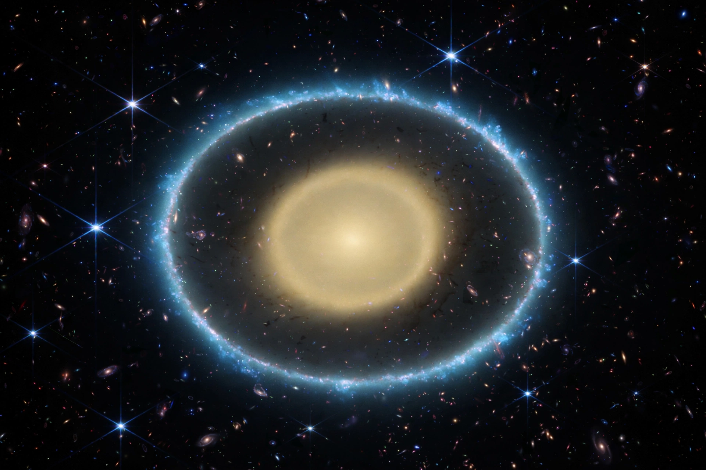

Gravitational lensing

[Image: Hubble Space Telescope image of a galaxy cluster bending light into arcs and an Einstein ring]Gravitational lensing is the distortion of light by the curvature of spacetime around massive objects, predicted by General relativity: a galaxy or galaxy cluster between a distant source and an observer bends the source's light like an optical lens, producing magnified, stretched (arc) or multiple images — in perfect alignment, an 'Einstein ring'. The bending angle (1.75 arcseconds for light grazing the Sun) was measured in the 1919 eclipse expeditions that made Albert Einstein famous.
Lensing is now a precision tool: strong lensing maps Dark matter in clusters (and produced the Bullet Cluster's famous separation of dark from ordinary matter), magnifies the earliest galaxies for telescopes, and measures the Hubble constant from time delays; weak lensing (statistical distortion of galaxy shapes) maps the cosmic web and constrains Dark energy; microlensing detects exoplanets and compact dark objects. The first lens (the Twin Quasar Q0957+561) was found in 1979.
Regimes
Strong lensing (multiple images, arcs — mass within the Einstein radius), weak lensing (percent-level shape distortions, statistically stacked), and microlensing (temporary brightening without resolved images) probe mass regardless of whether it shines — the property that makes lensing the most direct evidence that most of the universe's matter is dark and not merely dim.